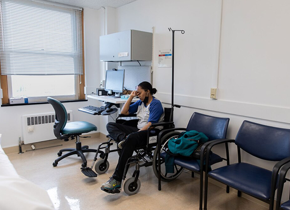
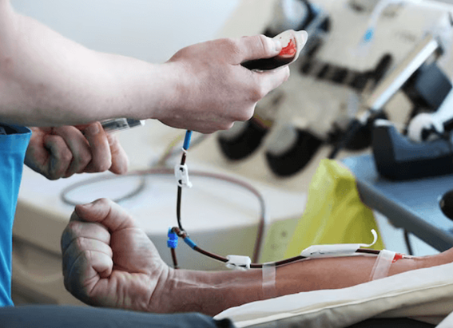

NATIONAL GEOGRAPHIC
Could COVID-19 trigger depression
SCIENCE
When Glo Lindenmuth was sick with COVID-19 in December 2021, she was congested and exhausted for about a week; her sense of smell and taste were gone for two weeks. She knew about these symptoms before she caught the virus and wasn’t surprised by them. But the sadness and trouble sleeping that kicked in weeks after she recovered from COVID caught her off-guard.
“I had depression as a teenager, but this was much worse,” says Lindenmuth, 30, who works in corporate communications in New York City. In addition to suddenly feeling down, she had trouble sleeping and bad dreams. When she was awake, her brain was foggy and bleak thoughts often about doing something harmful to herself intruded. And though she was typically bubbly and extroverted, she was overwhelmed with social anxiety. “I’d cancel plans with friends, sleep all day on the weekends, and avoid the majority of calls and texts,” she says.
Her symptoms lasted for more than two months.
In the spring, Lindenmuth began feeling a bit better but then another intense wave of depression enveloped her from mid-June to mid-August. That’s when she went to see a behavioral psychiatrist who diagnosed her with depression.
It’s estimated that millions of people are discovering that even after they think they have bounced back from their COVID-19 illness, they continue to feel down, fatigued, apathetic, anxious, or otherwise emotionally out of sorts.
In a study based on millions of people who used the U.S. Department of Veterans Affairs health system, “we noticed that we had a nation in distress, due to the mayhem of the pandemic and lockdown,” says Ziyad Al-Aly, director of the clinical epidemiology center at Washington University in St. Louis, Missouri, and a coauthor of the report. Al-Aly and his colleagues wanted to know whether people who got COVID-19 had a higher risk of mental health problems after symptoms of the illness subsided. “The answer was absolutely yes. People with COVID had it much, much worse.”
According to research in the June 2022 issue of the journal CNS Drugs, 35 percent of people reported depressive symptoms after recovering from COVID. And it may not be simply because they lost days or weeks of their regularly scheduled lives to COVID. It may be because they have a little-known phenomenon called post-viral depression, which is likely triggered by inflammatory changes, psychological stress, and other factors.
These symptoms typically “kick in two to three months after the onset of COVID-19 and seem to last several months,” says Madhukar Trivedi, a psychiatrist and founding director of the Center for Depression Research and Clinical Care at the UT Southwestern Medical Center in Dallas. “There’s no way to predict who will have transient effects or who will have persistent ones.”
The scope of the phenomenon
The link between viral illnesses and depression isn’t new but has become more widely recognized and understood in recent decades. A study in a 2016 issue of the journal Brain, Behavior, and Immunity, for example, found that people who were sick with the flu in the previous 30 to 180 days had a 57 percent higher risk of new onset depression, compared to those who dodged the virus. Post-viral depression also can happen with the Epstein-Barr virus, which causes mononucleosis, and other non-specific viruses, experts say.
Al-Aly’s study, published in February 2022 in BMJ, found that people who’d been sick with COVID had a 35 percent higher risk of developing an anxiety disorder and a 39 percent higher risk of experiencing a bout of depression a month after their illness; these surges were accompanied by increased use of antidepressants and benzodiazepines.
This is far from an isolated finding. A study in the April 2022 issue of the Journal of Neurology found that elevated levels of apathy and anxiety were common among COVID survivors who had fatigue eight months after their illness. And in a study in the May 2022 issue of The Lancet, researchers followed the mental-health trajectory of people in six countries in Europe who had been sick with COVID but weren’t hospitalized for it and found that these individuals had a higher prevalence of depression in the subsequent months, especially if they had been bedridden with the illness.
Mechanisms behind the misery
Exactly how COVID-19 triggers depression isn’t fully understood but there are several hypotheses. The SARS-CoV-2 virus may cause more inflammation in the brain and activate microglial cells, immune cells in the central nervous system that produce inflammatory molecules, Al-Aly explains. “Inflammation can affect brain regions that regulate affect and emotions it can turn them up or turn them down.”
Another theory is that the virus can attack the lining of blood vessels, which can compromise the blood and oxygen supply to the brain and disrupt areas that regulate emotion, Al-Aly adds.
A third hypothesis suggests that the virus can disrupt the diversity and equilibrium of the bacteria in the gut the gut microbiome which could in turn alter the levels of certain neurotransmitters, chemical messengers that transmit nerve signals throughout the body and brain and are involved in mood regulation, he says. “What’s really clear is that the virus’s effect on mental health is a biological phenomenon it’s not imagined,” Al-Aly says.
That’s not to say there aren’t psychological elements at play. Prolonged isolation and feelings of loneliness during the illness may contribute to post-COVID depression, says Pravesh Sharma, a psychiatrist at the Mayo Clinic College of Medicine and Sciences in Eau Claire, Wisconsin. When it comes to post-COVID depression, “sometimes people think why me?” Sharma says. “That creates a lot of negative thought and affects how people function in everyday life.” These factors can trigger a vicious cycle that traps people in a depressive state.
Comments :
- john Very good
- john Very good
Leave a Reply
Your email address will not be published. Required fields are marked*
Related posts:
-
How do you know if you have long COVID
A few days after Michele Hart tested negative following a COVID infection in June 2022, she started participating in virtual meetings for her job. But after each call, she crawled back into bed to rest. When she returned
View article -
 COVID can trigger tinnitus. Could the vaccines do the same
COVID can trigger tinnitus. Could the vaccines do the sameAfter Gregory Poland, an internal medicine doctor at Mayo Clinic who directs its Vaccine Research Group, got his second dose of COVID vaccine in February 2021 he developed such severe and sudden ringing
View article -
Blood cleaning Long COVID patients turn to unproven treatments
Ever since she first experienced such hallmark COVID-19 symptoms as fever, shortness of breath, and muscle pain, in March 2020, 39-year-old Miriam has continued to suffer. In 2021, her health dramatically worsened
View article